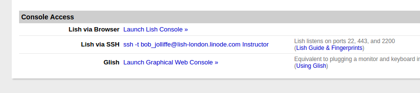

The following exercises are designed for participants to acquire particular skills and tips for installing ubuntu servers and installing dhis2.
This exercise involves building a system on the linode. We will run through the process interactively (step by step), but in a production setting this is not the preferred method. Nowadays it is more common to provision servers dynamically on the fly. We will go through manually first and later in the day discuss how to automate the process.
You need to go to the linode control panel, and login with your credentials. Select your linode and create a new configuration using ubuntu 16.04 64 bit edition. A useful guide for getting started is available here.
After installation is complete, you can boot the server and get access to its running console. You can do this by going to the "Remote Access" tab of the linode control panel and clicking on "Launch Lish Console" at the bottom of the page.

Lish is in some ways equivalent to sitting in front of a physical machine. Later you will access the server via ssh, but having the ability to access directly via lish is an important fallback in case you are somehow locked out of access via ssh.
Note: lish is a utility specific to linode. Other hosting
providers will have different ways to accomplish the same thing.
As a precaution while we are feeling our way around the system it is a good idea to prevent outside network access. At least until we have secured things a bit better. Newborn servers are often the most vulnerable as they have not yet been properly patched and configured. A common mistake is that when someone acquires a new machine they power it up, connected to the internet, and then leave it running with the intention of coming back to configure later. If you are not going to deal with it immediately switch it off. Hackers are constantly probing for running machines and will chance upon your surprisingly quickly.
A simple way to keep us a bit safer is to enable a simple firewall. Ubuntu server comes by default with ufw (uncomplicated firewall). We will be discussing firewalls in more detail later, but for now just type:
ufw enableWithout any other firewall rules applied, this will simply block all network traffic to the server which is a good safety precaution.
So for the moment lish is the only way in.
When the system is initially installed it has a root user by default. The convention on ubuntu systems is never to login as root, but rather configure a human user and grant that person privileges to perform operations as root. There (at least) two good reasons for this:
dhis).The commands to create a new user and give her permission to execute commands as root are:
adduser bobj
usermod -a -G sudo bobjThe first line creates the user. It is an interactive process. Generally it is a good idea to set the real name of the user, but most of the rest can be ignored.
usermod is used to modify the user. The specific modification that is being done here is that the user bobj is being added to a group of users called sudo (more on users and groups later). Users in the sudo group have the permission to execute commands as the root user. So there is no more reason to be able login as root.
Logout of the system (exit) and log back in as your new user.
It is important that the operating system is kept up to date with the latest packages. Particularly when there are security related packages.
This is a two step process. The first is to download the latest list of packages:
apt-get updateWhen you run this as your user you will get an error message. You need to be the root user in order to update packages on the system. Because your user is in the sudo group, she is able to run commands as root by prefixing sudo to the command:
sudo apt-get updateNow you will be prompted for your password and the update will begin.
You can get a full description of what update does by looking at the manual page for the apt-get command. You do this with:
man apt-getA common mistake with beginners, once they have discovered that
sudoallows them to do useful things is that they start to usesudofor everything. Try and resist this temptation and only use sudo when you need to. This can help you avoid many difficulties, mistakes and disasters.. Note we didn't need tosudoin order to read the manual.
Now that you have your updated list of packages installed, you can upgrade your base system with the latest software. You will have seen from the manual page that there are different types of upgrade that can be done. In this case, because the server is new, we will use the most aggressive:
sudo apt-get dist-upgradeA more cautious approach you might use when the system is in production is to just use apt-get upgrade.
Discussion point: it is an open question whether to configure your system to automatically update itself as new versions of packages are released or to always do this manually. A halfway position (which I recommend) is to ensure that all security related patches are applied automatically. The official ubuntu server docs explain how to set up unattended upgrades here.
As an exercise, setup unattended upgrades for your linode now.
The primary way in which administrators interact with the backend system on a linux server is using ssh (secure shell). A linux server usually has an ssh server program installed on it (sshd).
Linux (and other unix derivatives) make use of openssh, which is usually included as part of the base install. Openssh is the most widely used implementation of openssh which means it is generally quite secure. When vulnerabilities are discovered they are typically patched quickly.
There are a number of ways to improve your default ssh configuration. Typically you might:
You should definitely do the first option in this list (after we have configured ssh keys we will also do the second). It involves editing a file called /etc/ssh/sshd_config and changing the line which contains "PermitRootLogin" to no. There are a number of linux text editors available. Experienced admins tend to use vi, but beginning users might prefer to use nano. Go ahead and edit the file with:
sudo nano /etc/ssh/sshd_configAfter you have disabled root login, you can go back to the firewall and enable access to the ssh port:
sudo ufw limit ssh/tcp(discuss ufw limit)
At this point, if you have an ssh client, you should be able to access your linode using ssh, using its IP address or its fully qualified domain name (FQDN - more on this later).
Windows users will typically have to install additional software in order to be able to connect. There are three options which we can recommend (probably there are more).
This exercise involves setting an ssh key pair, and copying the public part of the pair to the linux server. This allows logging in without using a password. This is the preferred method.
(Discussion on assymetric vs symetric encryption methods - ssh, ssl/tls, pgp)
If you do not yet have a keypair and/or do not know how to generate one, sit with someone now who can explain how to do it using your particular environment.
The process we have gone through today is long, detailed and prone to error. It is quite likely that we might forget a few steps here and there. There are a number of systems which help with automatic the provisioning of systems. The most well known ones are probably vagrant, ansible, puppet and chef. Automatic provisioning means that deploying a system is much quicker but also (more importantly) it allows you to enforce standards for configuration.
The simplest form of automation is just to run a bash script which goes through the configuration steps.
Linode provides a mechanism for organising and parameterizing these scripts, called StackScripts.
Below is a simple example of a script which automates most of the steps we have discussed above.
#!/bin/bash
# ____ __ ______________
# / __ \/ / / / _/ ___/__ \
# / / / / /_/ // / \__ \__/ /
# / /_/ / __ // / ___/ / __/
# /_____/_/ /_/___//____/____/
#
# Installation stackscript
#
#<UDF name="myuser" label="Username:">
#<UDF name="ssh" label="SSH Public Key:">
#<UDF name="sshport" label="SSH Port:" default="22">
#<UDF name="hostname" label="The hostname for the new Linode.">
#<UDF name="fqdn" label="The new Linode's Fully Qualified Domain Name">
# enable firewall
ufw enable
export DEBIAN_FRONTEND=noninteractive
# This updates the packages on the system from the distribution repositories.
apt-get update
apt-get upgrade -y
# This sets the variable $IPADDR to the IP address the new Linode receives.
IPADDR=$(/sbin/ifconfig eth0 | awk '/inet / { print $2 }' | sed 's/addr://')
# This section sets the hostname.
echo $HOSTNAME > /etc/hostname
hostname -F /etc/hostname
# Create administrative user
useradd -m -G sudo -s /bin/bash ${MYUSER}
# Perform tasks for new user
# set a temporary password
echo $(</dev/urandom tr -dc A-Za-z0-9 | head -c 10) > /home/$MYUSER/passwd.txt
chmod 600 /home/$MYUSER/passwd.txt
echo "${MYUSER}:$(cat /home/${MYUSER}/passwd.txt)" | chpasswd
# This sets your public key on your Linode
mkdir /home/$MYUSER/.ssh
echo "${SSH}" >> /home/$MYUSER/.ssh/authorized_keys
chmod 600 /home/$MYUSER/.ssh/authorized_keys
# make sure user owns everything
chown -R $MYUSER.$MYUSER /home/$MYUSER
# Tighten up ssh
# Disables password authentication
sed -i 's/#*PasswordAuthentication [a-zA-Z]*/PasswordAuthentication no/' /etc/ssh/sshd_config
# Disable root login
sed -i 's/PermitRootLogin [a-zA-Z]*/PermitRootLogin no/' /etc/ssh/sshd_config
# Change Port
sed -i "s/Port [0-9]*/Port $SSHPORT/" /etc/ssh/sshd_config
# This restarts the SSH service
service ssh restart
# Allow ssh through firewall
ufw limit $SSHPORT/tcpNow that we have a reasonably secure system setup, we can continue to install the dhis2-tools. The dhis2-tools were created about 3 years ago, with the aim of providing a simple way to install and manage dhis2 instances on an ubuntu server. It is a proper ubuntu package which takes care of (i) dependencies and (ii) provides a set of scripts for creating and managing dhis2 instances.
The source code for the package is maintained on github. You only need this if you are planning on modifying or contributing the package itself.
The current packaged version is maintained by Bob Jolliffe and published on launchpad. (TODO: this should be moved to dhis2-devs).
Docmentation is maintained in the implementers guide.
(work through the documentation and discuss)
Instructions for installing exim4 as a send-only mail service are here.
Postfix is much more commonly used on linux than exim4. As an exercise we should go through the steps for installing postfix. It is very similar. The most important thing is that your FQDN has been properly setup.
Note: there seems to be a permissions problem with default ubuntu 16.04 install. syslog is unable to write to /var/log.
bobj@instructor:~$ ls -l /var
total 40
drwxr-xr-x 2 root root 4096 Mar 20 20:23 backups
drwxr-xr-x 11 root root 4096 Mar 20 14:56 cache
drwxr-xr-x 43 root root 4096 Mar 20 14:48 lib
drwxrwsr-x 2 root staff 4096 Apr 12 2016 local
lrwxrwxrwx 1 root root 9 Jul 22 2016 lock -> /run/lock
drwxr-xr-x 11 root syslog 4096 Mar 20 14:48 log
drwxrwsr-x 2 root mail 4096 Mar 20 14:36 mail
drwxr-xr-x 2 root root 4096 Jul 22 2016 opt
lrwxrwxrwx 1 root root 4 Jul 22 2016 run -> /run
drwxr-xr-x 5 root root 4096 Mar 20 14:24 spool
drwxrwxrwt 3 root root 4096 Mar 21 03:11 tmp
drwxr-xr-x 3 root root 4096 Mar 20 14:48 www
bobj@instructor:~$ sudo chmod 0775 /var/log
bobj@instructor:~$ ls -l /var
total 40
drwxr-xr-x 2 root root 4096 Mar 20 20:23 backups
drwxr-xr-x 11 root root 4096 Mar 20 14:56 cache
drwxr-xr-x 43 root root 4096 Mar 20 14:48 lib
drwxrwsr-x 2 root staff 4096 Apr 12 2016 local
lrwxrwxrwx 1 root root 9 Jul 22 2016 lock -> /run/lock
drwxrwxr-x 11 root syslog 4096 Mar 20 14:48 log
drwxrwsr-x 2 root mail 4096 Mar 20 14:36 mail
drwxr-xr-x 2 root root 4096 Jul 22 2016 opt
lrwxrwxrwx 1 root root 4 Jul 22 2016 run -> /run
drwxr-xr-x 5 root root 4096 Mar 20 14:24 spool
drwxrwxrwt 3 root root 4096 Mar 21 03:11 tmp
drwxr-xr-x 3 root root 4096 Mar 20 14:48 www
bobj@instructor:~$ Now that logs exist we can see there is a complaint from google mail servers in the log file related to IPv6 configuration when we try and send mail:
Our system has detected that this 550-5.7.1 message does not meet IPv6 sending guidelines regarding PTR records 550-5.7.1 and authentication.The simplest solution is to disable IPv6. So the following changes to /etc/postfix/main.cf:
#inet_interfaces = all
#inet_protocols = all
inet_interfaces = 127.0.0.1
inet_protocols=ipv4Then sudo service postfix restart and mail is up and running. Note above I also shifted the interface to be sure postfix won't accept outside mail.